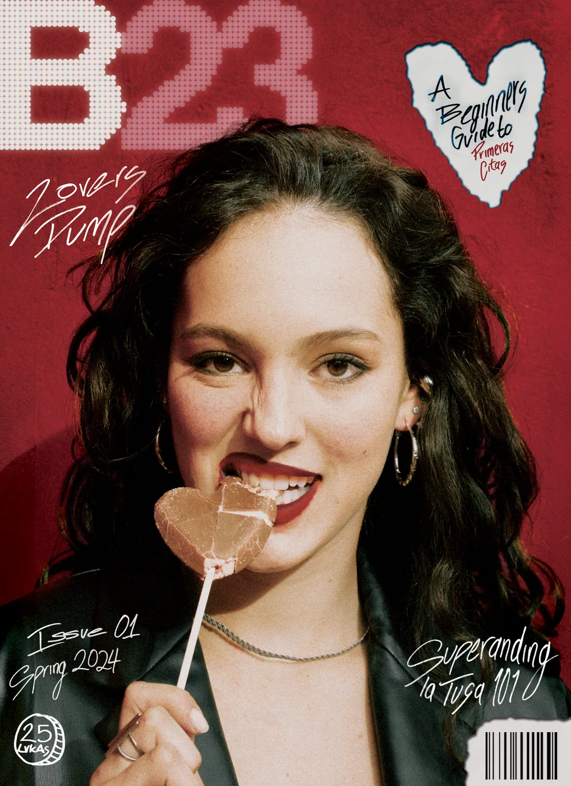
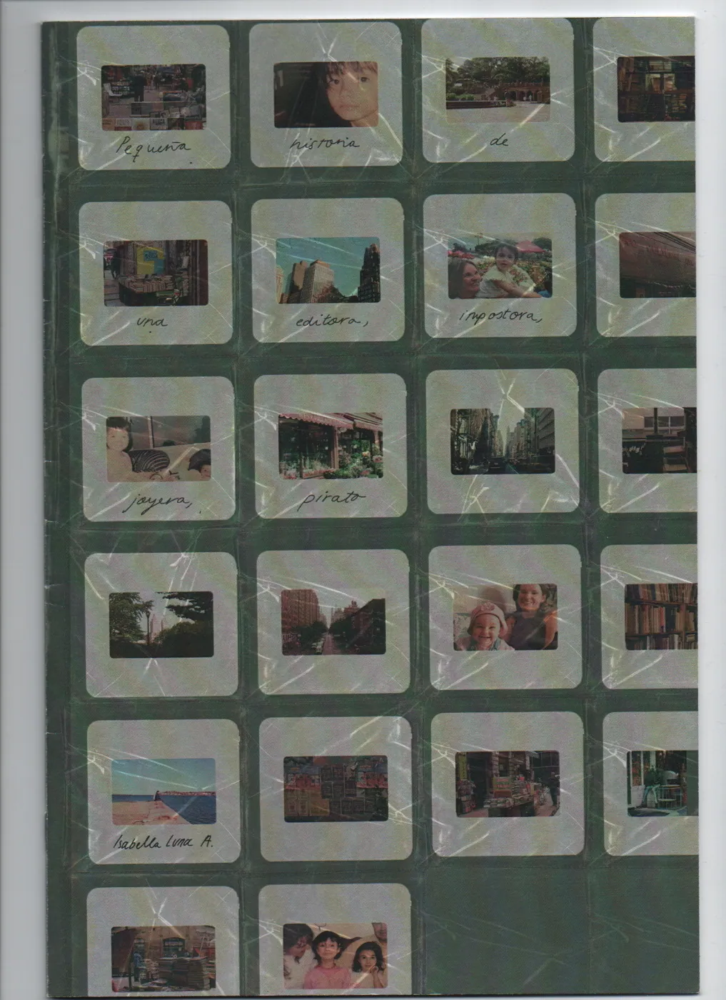

Saltar al contenido
proyectos
sobre nudo
servicios
contacto
menú
inicio
proyectos
sobre nudo
servicios
contacto
nudo.laboratoriocreativo@gmail.com
proyectos
Publicaciones, objetos, ilustraciones y otras formas de narrar.

B23
revista · edición · diseño · ilustración

Ocupar espacio
publicaciones · objeto editorial · materialidad
El mundo de Ñams
libro ilustrado · personajes · diseño
Etno DJ
ilustración · exposición · identidad
Carey
ilustración · pictogramas · portada
cerrar
×
←
→
ver